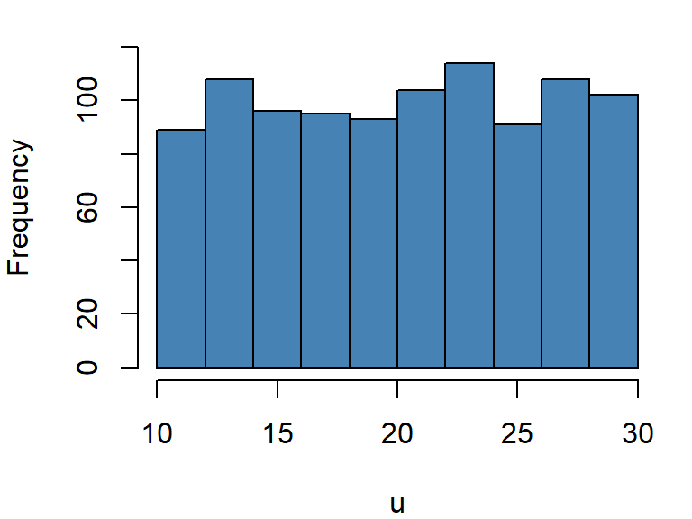
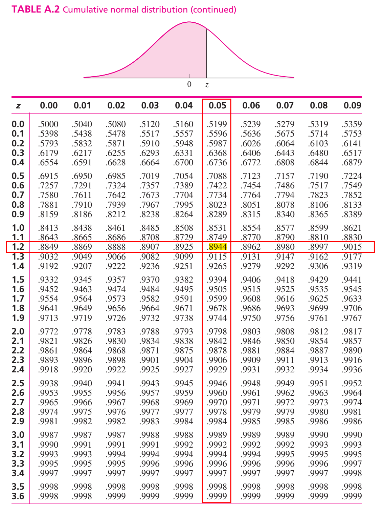
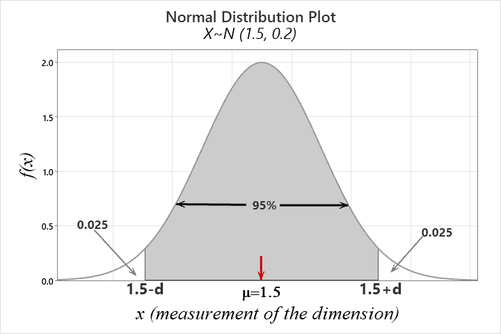

par(mar=c(4,4,1,1)) # Adjust graph margin
set.seed(911)
u=runif(1000,10,30) # Generating 1000 random numbers from U(10,30)
hist(u,main = " ",col="steelblue",ylim = c(0,120)) # Frequency histogram of U

A continuous r.v \(X\) is said to be uniform r.v ranges between \(a\) to \(b\) if it has the following PDF
\[ f(x)=\frac{1}{b-a} \ \ ; \ \ a<x<b \tag{6.1}\]

with
Mean: \(\mu=E(X)=\frac{a+b}{2}\)
Variance: \(\sigma^2=\frac{(b-a)^2}{12}\)
We write, \(X\sim U(a,b)\)
If \(X\sim U(a,b)\) then the \(P(x_1<X<x_2)\) is actually the area of the shaded rectangle.

That is,
\[ P(x_1<X<x_2)=Base\times Height=(x_2-x_1)\times \frac{1}{b-a} \]
Problem 1 The phase angle, \(\Theta\), of the signal at the input to a modem is uniformly distributed between \(0\) and \(2\pi\) radians.
a) What are the PDF, expected value, and variance of \(\Theta\)?
b) Find the probability that phase angle exceeds \(\frac{3\pi}{2}\)?
Problem 2 In a radio communications system, the phase difference \(X\) between the transmitter and receiver is modeled as having a uniform density in \([—\pi, +\pi]\). Find \(P(X < 0)\) and \(P(X< \pi/2)\).
Problem 3(Navidi 2011, 278) Resistors are labeled 100 \(\Omega\). In fact, the actual resistances are uniformly distributed on the interval \((95, 103)\).
a. Find the mean resistance.
b. Find the standard deviation of the resistances.
c. Find the probability that the resistance is between \(98\) and \(102 \ \ \Omega\).
d. Suppose that resistances of different resistors are independent. What is the probability that three out of six resistors have resistances greater than \(100\) \(\Omega\)?
par(mar=c(4,4,1,1)) # Adjust graph margin
set.seed(911)
u=runif(1000,10,30) # Generating 1000 random numbers from U(10,30)
hist(u,main = " ",col="steelblue",ylim = c(0,120)) # Frequency histogram of UThe most important probability distribution for describing a continuous random variable is the normal probability distribution. The normal distribution has been used in a wide variety of practical applications in which the random variables are heights and weights of people, test scores, scientific measurements, amounts of rainfall, and other similar values.
A continuous r.v \(X\) is said to be normal r.v if it has the following PDF:
\[ f(x)=\frac{1}{\sigma \sqrt{2\pi}} e^{-\frac{1}{2} (\frac{x-\mu}{\sigma})^2}\ \ ; -\infty<x<\infty \tag{6.2}\]
The graph of \(f(x)\) is called normal curve (Figure 6.3).
Mean: \(E(X)=\mu\)
Variance: \(Var(X)=\sigma^2\)
We write: \(X\sim N(\mu , \sigma^2)\)
Properties of normal distribution
The total area under the normal curve \(f(x)\) is 1 that is
\[ \int_{-\infty}^{\infty} f(x)dx=1 \]
Normal distribution is symmetric about mean, \(\mu\)
Mean, median and mode is identical in normal distribution that is \(Mean=Median=Mode=\mu\)
Almost \(99\%\) observations of \(X\) lie within 3 standard deviation of mean that is
\[ P(\mu-3\sigma<X<\mu+3\sigma)\approx 0.99 \]
Almost \(95\%\) observations of \(X\) lie within 2 standard deviation of mean that is \[ P(\mu-2\sigma<X<\mu+2\sigma)\approx 0.95 \]
Almost \(68\%\) observations of \(X\) lie within 1 standard deviation of mean that is \[ P(\mu-\sigma<X<\mu+\sigma)\approx 0.68 \]
Suppose \(X\sim N(\mu, \sigma^2)\). Then the variable \(Z=\frac{X-\mu}{\sigma}\) is said to be standard normal variable with PDF
\[ f(z)=\frac{1}{\sqrt {2\pi}} e^{-z^2} \ \ ; -\infty<z<\infty \tag{6.3}\]
Mean: \(E(Z)=0\)
Variance: \(Var(Z)=1\)
We write: \(Z\sim N(0,1)\)
To compute area (probability) under the standard normal curve for a given interval of \(z\) we use standard Normal Distribution table which provides cumulative probabilities.
RULE-I: Suppose we want to find \(P(Z<1.25)\).
From TABLE A.2 in Navidi (2011) we have
\[ P(Z<1.25)=0.8944 \]

The probability \(P(Z<1.25)\) is shown in Figure 6.5.
RULE-II: Now we find \(P(Z>1.36)\)
So, due to symmetry we can write \(P(Z>1.36)=P(Z<-1.36)=0.0869\)

RULE-III: Let us evaluate \(P(-1.96<Z<2.58)\).
We can write
\[ =P(-1.96<Z<2.58) \]
\[ =P(Z<2.58)-P(Z<-1.96) \]
\[ =0.9951-0.0250=0.9701 \]
What is the \(90^{th}\) percentile of \(Z\)? To answer this question, let \(k\) is the \(90^{th}\) percentile of \(Z\). So we can write
\[ P(Z<k)=0.90 \ \ \ \ \ \ \ \ \ \cdot \cdot \cdot (1) \]
From TABLE A.2 in Navidi (2011) we have
\[ P(Z<1.28)=0.90 \ \ \ \ \ \ \ \ \ \cdot \cdot \cdot(2) \]
Comparing eq.(1) with eq.(2) we have \(k=1.28\). So the \(90^{th}\) percentile of \(Z\) is \(1.28\).
Problem 1 Find \(c\) such that \(P(Z>c)=0.05\).
Problem 2 Find \(c\) such that \(P(-c<Z<c)=0.95\).
Suppose \(X\sim N(30, 5^2)\) . Then find the following:
a) \(P(X<22)\)
b) \(P(X>44)\)
c) \(P(20<X<35)\)
d) If \(P(X<x)=0.25\) then find the value of \(x\).
Solution:
Here, \(\mu=30\) and \(\sigma=5\)
a) \(P(X<22)=P(\frac{X-\mu}{\sigma}<\frac{22-30}{5})=P(Z<-1.60)=0.0548\).
b) \(P(X>44)=P(\frac{X-\mu}{\sigma}>\frac{44-30}{5})\)
\(=P(Z>2.80)=P(Z<-2.80)=0.0026\)
c) \(P(20<X<35)=P(\frac{20-30}{5}<\frac{X-\mu}{\sigma}<\frac{35-30}{5})\)
\(=P(-2<Z<1)=P(Z<1)-P(Z<-2)\)
\(=0.8413-0.0228=0.8185\)
d) To find the value of \(x\) we proceed this way.
\[ P(X<x)=0.25 \] \[ \implies P(\frac{X-\mu}{\sigma}<\frac{x-30}{5})=0.25 \]
\[ \implies P(Z<\frac{x-30}{5})=0.25 \ \ \ \ \ \cdot \cdot \cdot (1) \]
From TABLE (Appendix B) we have
\[ P(Z<-0.67)=0.25 \ \ \ \ \cdot \cdot \cdot (2) \]
Comparing (1) with (2) we can write
\[ \frac{x-30}{5}=-0.67 \] \[ \implies x=30+(-0.67)\times 5 \]
\[ \therefore x=26.65 \]
If \(P(X<x)=p\) and
\(P(Z<z)=p\) then
\[ x=\mu+z\sigma \]
Example 6.7: A certain type of storage battery lasts, on average, 3.0 years with a standard deviation of 0.5 year. Assuming that battery life is normally distributed, find the probability that a given battery will last less than 2.3 years.
Example 6.8 : An electrical firm manufactures light bulbs that have a life, before burn-out, that is normally distributed with mean equal to 800 hours and a standard deviation of 40 hours. Find the probability that a bulb burns between 778 and 834 hours.
Example 6.9 : In an industrial process, the diameter of a ball bearing is an important measurement. The buyer sets specifications for the diameter to be \(3.0 \pm 0.01\) cm. The implication is that no part falling outside these specifications will be accepted. It is known that in the process the diameter of a ball bearing has a normal distribution with mean \(\mu = 3.0\) and standard deviation \(\sigma = 0.005\). On average, how many manufactured ball bearings will be scrapped?
Example 6.10 : Gauges are used to reject all components for which a certain dimension is not within the specification \(1.50 \pm d\). It is known that this measurement is normally distributed with a mean of 1.50 and a standard deviation of 0.2. Determine the value d such that the specifications “cover” 95% of the measurements.
Solution:
Let, \(X=measurement \ \ of \ \ certain \ \ dimension\)
Given, \(X\sim N(1.5,0.2)\)
According to question,
\(P(1.5-d<X<1.5+d)=0.95\)
So, \(P(X<1.5-d)+P(X>1.5+d)=0.05\)

So, \(P(X <1.5-d)=0.025 \ \ \ \ \cdot \cdot \cdot(1)\)
\(\implies P(\frac{X-\mu}{\sigma} <\frac{1.5-d-1.5}{0.2})=0.025\)
\(\implies P(Z<\frac{-d}{0.2})=0.025 \ \ \ \ \cdot \cdot \cdot(1)\)
From TABLE A.2 we have
\(P(Z<-1.96)=0.025 \ \ \ \ \ \cdot \cdot\cdot(2)\)
Comparing eq.(1) with eq. (2) we have
\(\frac{-d}{0.2}=-1.96\)
\(\implies -d=-0.392\)
\(\therefore d=0.392\)
Alternative:
\(P(X <1.5-d)=0.025 \ \ \ \ \cdot \cdot \cdot(1)\)
But, \(P(Z<-1.96)=0.025 \ \ \ \ \cdot \cdot \cdot (2)\)
Hence, \(1.5-d=\mu+z\sigma\); where \(z=-1.96\)
\(\implies 1.5-d=1.5-1.96\times 0.2\)
\(\therefore d=0.392\)
Exercise 6.11 : A soft-drink machine is regulated so that it discharges an average of 200 milliliters per cup. If the amount of drink is normally distributed with a standard deviation equal to 15 milliliters,
Exercise 6.14 The finished inside diameter of a piston ring is normally distributed with a mean of 10 centimeters and a standard deviation of 0.03 centimeter.
Exercise 6.17 : The average life of a certain type of small motor is 10 years with a standard deviation of 2 years. The manufacturer replaces free all motors that fail while under guarantee. If she is willing to replace only 3% of the motors that fail, how long a guarantee should be offered? Assume that the lifetime of a motor follows a normal distribution.
Binom tends to normal when \(n \rightarrow \infty\) and \(p\rightarrow 0.5\)
From Figure 6.8, Figure 6.9 and Figure 6.10 we observe that as \(n\) getting large with \(p=0.2\) (which is not extremely close to 0) the binomial distribution can be approximated to normal distribution.
So, when \(n\) become large and \(p\) is not extremely small (close to 0) or extremely large (close to 1) the normal approximation is most useful in calculating binomial sums.
Let X be a binomial random variable with parameters \(n\) and \(p\). For large \(n\), \(X\) has approximately a normal distribution with \(\mu = np\) and \(\sigma^2 =np(1-p)\).
The approximation will be good if \(np\) and \(n(1-p)\) are greater than or equal to \(5\) (Walpole et al. 2017).
Continuity correction
This correction is needed when we approximate a discrete distribution (Binomial in this case) by a continuous distribution (Normal). Recall that the probability \(P(X = x)\) may be positive if \(X\) is discrete, whereas it is always \(0\) for continuous \(X\). This is resolved by introducing a continuity correction. Expand the interval by 0.5 units in each direction, then use the Normal approximation (Baron 2019).
| Binomial Probability | With continuity correction |
|---|---|
| \(P(X=x)\) | \(P(x-0.5<X<x+0.5)\) |
| \(P(X\le x)\) | \(P(X\le x+0.5)\) |
Example 6.15 (Walpole et al. 2017, 191): The probability that a patient recovers from a rare blood disease is 0.4. If 100 people are known to have contracted this disease, what is the probability that fewer than 30 survive?
In many situations, such as when modeling waiting times, inter-arrival times, the lifespan of hardware, breakdown times, and the intervals between phone calls, the exponential distribution is utilized. The time (suppose \(T\)) between rare events in Poisson process with arrival rate \(\lambda\) (number of arrival per unit time) can be treated as exponential r.v.
The exponential r.v \(T\) has the following PDF
\[ f(t)=\lambda e^{-\lambda t} \ \ ; \ \ t>0 \tag{6.4}\]
CDF: \(F(t)=P(T\le t)=P(T< t)=1-e^{-\lambda t}; t> 0\)
Hence, \(P(T> t)=1-P(T\le t)=1-F(t)=e^{-\lambda t}\)
Mean: \(E(T)=\frac{1}{\lambda}\)
Variance: \(Var(T)=\frac{1}{\lambda^2}\)
We write, \(T\sim Exp(\lambda)\)
The quantity \(\lambda\) is a parameter of Exponential distribution, and its meaning is clear from \(E(T) = \frac{1}{\lambda}\) . If T is time, measured in minutes, then \(\lambda\) is a frequency, measured in \(min^{-1}\). For example, if arrivals occur every half a minute, on the average, then \(E(T) = 0.5\)min and \(\lambda=2\), saying that they occur with a frequency (arrival rate) of 2 arrivals per minute. This \(\lambda\) has the same meaning as the parameter of Poisson distribution(Baron 2019).
Example 4.5(Baron 2019) Jobs are sent to a printer at an average rate of 3 jobs per hour.
What is the expected time between jobs?
What is the probability that the next job is sent within 5 minutes?
Solution: Given, number of jobs per hour, \(\lambda=3\ \ hr^{-1}\) per hour. Let, \(T\)=time elapsed between jobs (hour).
So, \(T\sim Exp(\lambda)\)
\(E(T)=\frac{1}{\lambda} hr=\frac{1}{3} hr=20\ \ mins\);
Here, \(5 \ \ mins=\frac{5}{60} hr=\frac{1}{12} hr\) We know, \(F(t)=1-e^{-\lambda t}; t>0\)
So, \(P(T<5 \ \ mins)=P(T<\frac{1}{12})=F(\frac{1}{12})=1-e^{-3*\frac{1}{12}}=0.22\)
Example 4.58 (Navidi 2011) A radioactive mass emits particles according to a Poisson process at a mean rate of 15 particles per minute. At some point, a clock is started. What is the probability that more than 5 seconds will elapse before the next emission? What is the mean waiting time until the next particle is emitted?
Solution
Let, \(T=elapsed \ \ time \ \ before \ \ the \ \ next \ \ emission (in \ \ second)\)
Given, \(\lambda=15 min^{-1}=\frac{15}{60} s^{-1}=0.25 s^{-1}\) and
\(T\sim Exp(\lambda)\);
\(P(T\le t)=F(t)=1-e^{-\lambda t}\)
P(more than 5 seconds will elapse before the next emission)=\(P(T>5)=e^{-\lambda * 5}=e^{-0.25*5}=0.2865\)
Mean waiting time, \(E(T)=\frac{1}{\lambda} s=\frac{1}{0.25}s=4s\)
If \(T \sim Exp(\lambda)\), and \(t\) and \(s\) are positive numbers, then
\[ P(T> t+s| T> s)=P(T> t) \]
We can also express the Lack of memory property in this way:
\[ P(T< t+s| T> s)=P(T< t) \]
The probability that we must wait additional \(t\) units, given that we have already waited \(s\) units, is the same as the probability that we must wait \(t\) units from the start. The exponential distribution does not “remember” how long we have been waiting.
In particular, if the lifetime of a component follows the exponential distribution, then the probability that a component that is \(s\) time units old will last an additional \(t\) time units is the same as the probability that a new component will last \(t\) time units.
In other words, a component whose lifetime follows an exponential distribution does not show any effects of age or wear(Navidi 2011).
But if the failure of the component is a result of gradual or slow wear (as in mechanical wear), then the exponential does not apply and either the gamma or the Weibull distribution (see (Walpole et al. 2017), Section 6.10) may be more appropriate.
Example 4.59(Navidi 2011) The lifetime of a particular integrated circuit has an exponential distribution with mean 2 years. Find the probability that the circuit lasts longer than three years.
Example 4.60(Navidi 2011) Refer to Example 4.59. Assume the circuit is now four years old and is still functioning. Find the probability that it functions for more than three additional years (Hints: Apply Lack of Memory Property).
Exercises for Section 4.7(Navidi 2011)
1.Let \(T \sim Exp(0.45)\). Find \(\mu_T, \sigma^2_T, P(T>3)\) and the median of \(T\).
2.The time between requests to a web server is exponentially distributed with mean 0.5 seconds.
Solution
Let, \(T=time \ \ between \ \ requests \ \ in \ \ second\)
If, \(T\sim Exp(\lambda)\); then it is given that
\(E(T)=0.5 \ \ second\)
\(\implies \frac{1}{\lambda}=0.5 \ \ second\)
a. \(\therefore \lambda=2 s^{-1}\)
b. If \(M\) is the median time between request then,
\(P(T \le M)=0.5\)
\(\implies F(M)=0.5\)
\(\implies 1-e^{-\lambda *M}=0.5\)
\(\implies e^{-\lambda *M}=0.5\)
\(\implies {-\lambda *M}=ln(0.5)\)
\(\implies M =\frac{ln(0.5)}{-\lambda}=\frac{ln(0.5)}{-2}=0.3466\approx0.35\)
So, median time between request is \(0.35s\)
c. Standard deviation of \(T\), \(\sigma_T=\frac{1}{\lambda}s=1/2 =0.5 s\)
d. Let, \(P_{80}\) denotes 80th percentile.
So, solve the following equation for \(P_{80}\)
\(P(T\le P_{80})=0.80\)
\(\implies P(T>P_{80})=0.20\)
\(\implies e^{-\lambda \times P_{80}}=0.20\)
\(\implies P_{80}=\frac {ln(0.20)}{-\lambda}=0.805\)
\(\therefore P_{80}=0.805 s\)
e. \(P(T>1)=e^{-\lambda *1}=0.1353\)
f. If there have been no requests for the past two seconds, the probability that there more than one additional second will elapse before the next request is:
\(P(T>1+2 /T>2)=P(T>1)=e^{-\lambda *1}=0.1353\) [by using Lack of memory property]
8.A radioactive mass emits particles according to a Poisson process at a mean rate of 2 per second. Let T be the waiting time, in seconds, between emissions.
Solution of f.
Since T is exponentially distributed and hold lack of memory property, so it dose not matter what was happened in past 3 seconds. We have to just compute that there will be an emission (event will occur) within the next second. So,
\(P(T<1)=F(1)=1-e^{-\lambda*1}\) (do yourself)
par(mar=c(4,4,1,1)) # Adjust graph margin
set.seed(911)
t=rexp(1000,rate = 2.5)
hist(t, main = "",col = "steelblue")